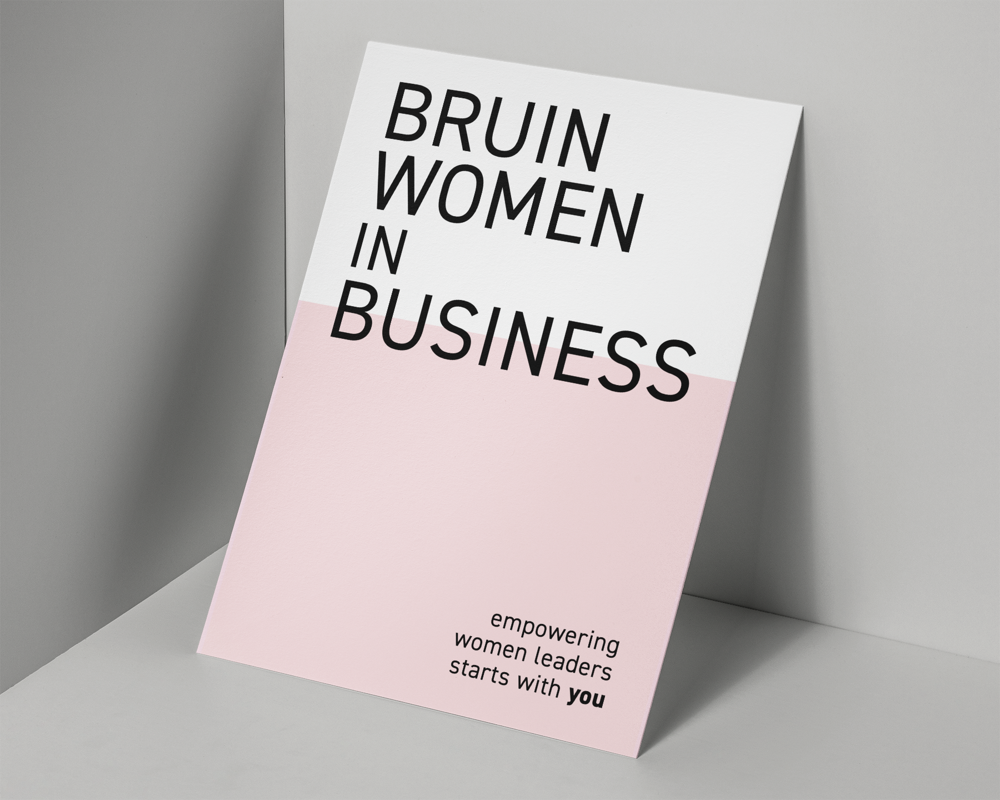
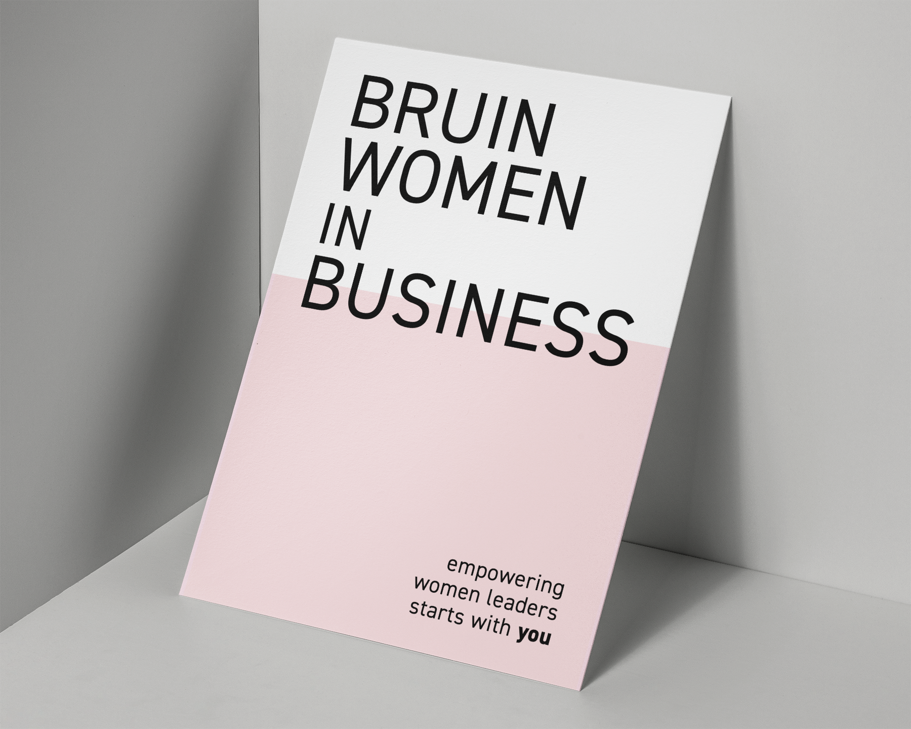

bruin women in business
BWIB is an organization at UCLA that supports women who are planning to pursue careers in business and marketing. This handout was designed to market an informational meeting and spread awareness of Bruin Women in Business on campus. Loosley based off the glass ceiling metaphor, the text is meant to appear as if it is breaking through.
![[Hidden]](img/Benefit-Ad-Subway.png) 
